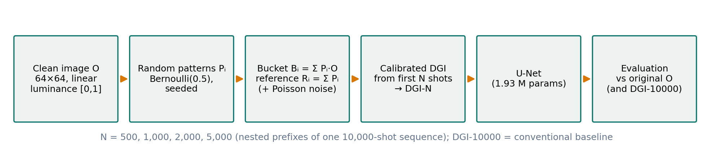
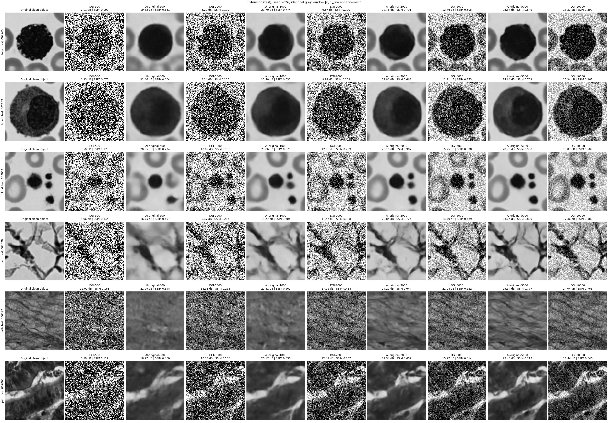
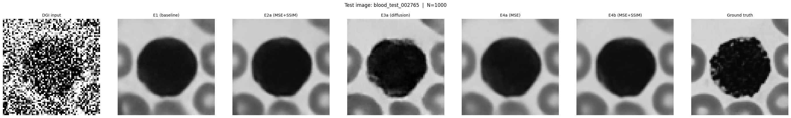
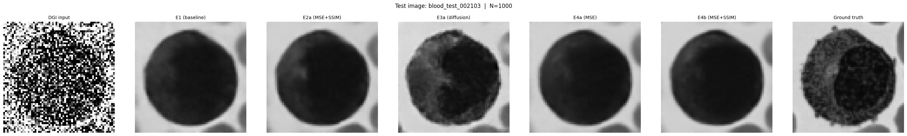
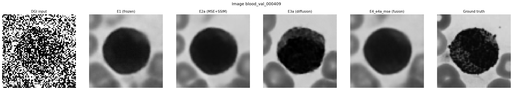
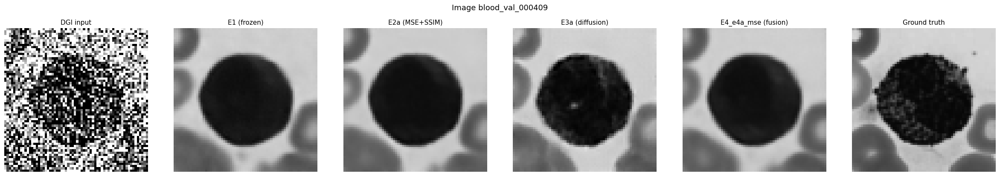
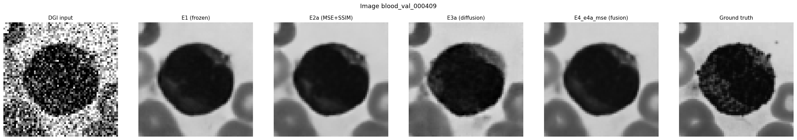
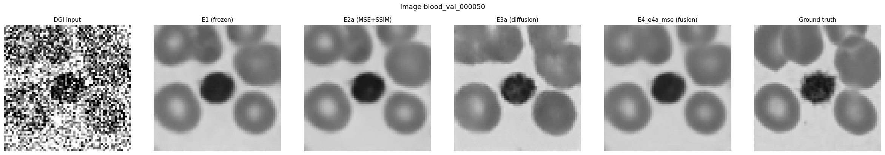
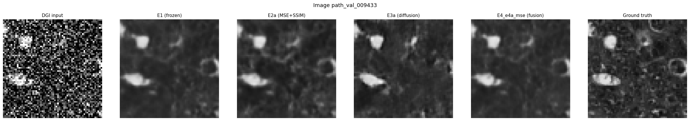

<title>LowShot Ghost Imaging</title>
<meta name="claude:viewport-fit-sides" content="cover">
<meta name="description" content="Interactive technical overview of the LowShot Ghost Imaging project: CGI pipeline, U-Net baseline, residual diffusion, and TransFusionNet architecture with full results.">
<link rel="stylesheet" href="https://fonts.googleapis.com/css2?family=Inter:wght@400;500;600;700;800;900&family=JetBrains+Mono:wght@400;500;600&display=swap">
<style>
/* Layout: tabbed single-page technical report, wide diagrams with scroll containers */
:root {
  --bg: #f5f7fa;
  --surface: #ffffff;
  --surface-alt: #eef2f7;
  --ink: #1a2a3a;
  --muted: #5e7389;
  --border: #d4dde6;
  --accent: #2563eb;
  --accent-soft: #dbeafe;
  --green: #16a34a;
  --green-soft: #dcfce7;
  --purple: #7c3aed;
  --purple-soft: #ede9fe;
  --amber: #d97706;
  --amber-soft: #fef3c7;
  --red: #dc2626;
  --red-soft: #fee2e2;
  --header-bg: #0f1b2d;
  --header-fg: #e2e8f0;
  --tab-active: #2563eb;
  --code-bg: #f0f4f8;
  --font-body: 'Inter', system-ui, -apple-system, sans-serif;
  --font-mono: 'JetBrains Mono', 'Fira Code', monospace;
}
@media (prefers-color-scheme: dark) {
  :root:not([data-theme="light"]) {
    --bg: #0d1117;
    --surface: #161b22;
    --surface-alt: #1c2330;
    --ink: #e6edf3;
    --muted: #8b949e;
    --border: #30363d;
    --accent: #58a6ff;
    --accent-soft: #1a2744;
    --green: #3fb950;
    --green-soft: #0d2818;
    --purple: #a371f7;
    --purple-soft: #1e1535;
    --amber: #d29922;
    --amber-soft: #2a2000;
    --red: #f85149;
    --red-soft: #2d1215;
    --header-bg: #010409;
    --header-fg: #c9d1d9;
    --tab-active: #58a6ff;
    --code-bg: #1c2330;
    color-scheme: dark;
  }
}
:root[data-theme="dark"] {
  --bg: #0d1117;
  --surface: #161b22;
  --surface-alt: #1c2330;
  --ink: #e6edf3;
  --muted: #8b949e;
  --border: #30363d;
  --accent: #58a6ff;
  --accent-soft: #1a2744;
  --green: #3fb950;
  --green-soft: #0d2818;
  --purple: #a371f7;
  --purple-soft: #1e1535;
  --amber: #d29922;
  --amber-soft: #2a2000;
  --red: #f85149;
  --red-soft: #2d1215;
  --header-bg: #010409;
  --header-fg: #c9d1d9;
  --tab-active: #58a6ff;
  --code-bg: #1c2330;
  color-scheme: dark;
}

* { box-sizing: border-box; }
body {
  margin: 0;
  background: var(--bg);
  color: var(--ink);
  font-family: var(--font-body);
  font-size: 15px;
  line-height: 1.6;
  padding-left: max(16px, env(safe-area-inset-left, 0px));
  padding-right: max(16px, env(safe-area-inset-right, 0px));
}
.page { max-width: 1500px; margin: 0 auto; padding-block: 24px; }

/* Header */
.header {
  background: var(--header-bg);
  border-radius: 16px;
  padding: 28px 32px;
  color: var(--header-fg);
  display: flex;
  justify-content: space-between;
  align-items: center;
  gap: 20px;
  flex-wrap: wrap;
}
.overline {
  font-size: 10px;
  font-weight: 700;
  letter-spacing: 2.5px;
  text-transform: uppercase;
  color: var(--accent);
  margin-bottom: 4px;
}
h1 { font-size: 26px; line-height: 1.25; margin: 0; font-weight: 800; letter-spacing: -0.5px; text-wrap: balance; }
.header p { margin: 6px 0 0; color: var(--muted); font-size: 13px; max-width: 60ch; }
.header-stats { display: flex; gap: 20px; flex-shrink: 0; flex-wrap: wrap; }
.stat-box { text-align: center; }
.stat-num { font-size: 28px; font-weight: 900; line-height: 1.1; color: var(--accent); font-variant-numeric: tabular-nums; }
.stat-label { font-size: 10px; font-weight: 600; letter-spacing: 1px; text-transform: uppercase; color: var(--muted); margin-top: 4px; }

/* Tabs */
.tabs {
  display: flex; align-items: center; gap: 8px; flex-wrap: wrap;
  margin: 20px 0; position: sticky; top: env(safe-area-inset-top, 0px); z-index: 5;
  background: var(--bg); padding-block: 8px;
}
body::before {
  content: ""; position: fixed; inset: 0 0 auto;
  height: env(safe-area-inset-top, 0px); z-index: 10;
  background: var(--bg);
}
.tab {
  border: 1px solid var(--border); background: var(--surface);
  padding: 9px 18px; border-radius: 9px;
  color: var(--muted); font-size: 13px; font-weight: 600;
  cursor: pointer; white-space: nowrap; transition: all 0.15s;
}
.tab:hover { border-color: var(--accent); color: var(--ink); }
.tab[aria-selected="true"] { background: var(--tab-active); border-color: var(--tab-active); color: #fff; }
.tab:focus-visible { outline: 3px solid var(--accent); outline-offset: 2px; }

/* Panels */
.panel { display: none; }
.panel.active { display: block; }

/* Cards */
.card {
  background: var(--surface); border: 1px solid var(--border);
  border-radius: 14px; padding: 24px 26px; margin-bottom: 16px;
}
.card-head { display: flex; align-items: flex-start; justify-content: space-between; gap: 16px; margin-bottom: 10px; flex-wrap: wrap; }
h2 { font-size: 20px; line-height: 1.3; margin: 0; font-weight: 700; letter-spacing: -0.2px; text-wrap: balance; }
.sub { font-size: 13px; color: var(--muted); margin: 4px 0 0; }
.tag {
  display: inline-block; padding: 4px 11px; border-radius: 20px;
  font-size: 11px; font-weight: 600; white-space: nowrap;
  border: 1px solid var(--border); background: var(--surface-alt); color: var(--muted);
}
.tag.blue { border-color: #bfdbfe; background: var(--accent-soft); color: var(--accent); }
.tag.green { border-color: #bbf7d0; background: var(--green-soft); color: var(--green); }
.tag.purple { border-color: #c4b5fd; background: var(--purple-soft); color: var(--purple); }
.tag.amber { border-color: #fde68a; background: var(--amber-soft); color: var(--amber); }

/* SVG diagrams */
.diagram-scroll { overflow-x: auto; padding: 8px 0; scrollbar-width: thin; scrollbar-color: var(--border) transparent; }
.architecture { display: block; width: 100%; height: auto; }
svg text { font-family: var(--font-body); }

/* Tables */
.results-table { border-collapse: collapse; width: 100%; font-size: 14px; margin: 16px 0; font-variant-numeric: tabular-nums; }
.results-table th, .results-table td { padding: 11px 14px; border-bottom: 1px solid var(--border); text-align: center; }
.results-table th:first-child, .results-table td:first-child { text-align: left; }
.results-table thead { background: var(--surface-alt); }
.results-table thead th { font-weight: 600; font-size: 12px; text-transform: uppercase; letter-spacing: 0.5px; color: var(--muted); }
.results-table .best { font-weight: 700; color: var(--green); }
.results-table .ours { background: var(--green-soft); }
.results-table tbody tr:hover { background: var(--surface-alt); }

/* Metric cards */
.metrics-grid { display: grid; grid-template-columns: repeat(auto-fit, minmax(150px, 1fr)); gap: 12px; margin: 18px 0; }
.metric {
  border: 1px solid var(--border); border-radius: 12px;
  padding: 16px; text-align: center; background: var(--surface);
}
.metric.best { border-color: var(--green); background: var(--green-soft); }
.metric .label { font-size: 12px; font-weight: 600; color: var(--muted); text-transform: uppercase; letter-spacing: 0.5px; }
.metric .big { font-size: 30px; font-weight: 900; line-height: 1.3; color: var(--ink); font-variant-numeric: tabular-nums; }
.metric .note { font-size: 11px; color: var(--muted); margin-top: 2px; }

/* Experiment chain */
.chain { display: flex; align-items: center; gap: 6px; flex-wrap: wrap; margin: 16px 0; font-size: 13px; }
.chain-node {
  padding: 8px 14px; border: 1px solid var(--border); border-radius: 8px;
  background: var(--surface-alt); font-weight: 600; white-space: nowrap;
}
.chain-node.highlight { background: var(--accent-soft); border-color: var(--accent); color: var(--accent); }
.chain-arrow { color: var(--muted); font-size: 18px; }

/* Key / legend */
.key { display: flex; gap: 18px; flex-wrap: wrap; font-size: 11px; color: var(--muted); margin: 14px 0; }
.key span::before {
  content: ""; display: inline-block; vertical-align: middle;
  width: 10px; height: 10px; border-radius: 2px; margin-right: 6px;
}
.key .k-blue::before { background: var(--accent); }
.key .k-green::before { background: var(--green); }
.key .k-purple::before { background: var(--purple); }
.key .k-amber::before { background: var(--amber); }
.key .k-muted::before { background: var(--muted); }

/* Code-style blocks */
.arch-block {
  font-family: var(--font-mono); font-size: 13px;
  background: var(--code-bg); border: 1px solid var(--border);
  border-radius: 8px; padding: 16px 18px; margin: 12px 0;
  overflow-x: auto; white-space: pre; line-height: 1.7; color: var(--ink);
}

/* Loss formula */
.formula {
  font-family: var(--font-mono); font-size: 18px; color: var(--ink);
  background: var(--surface-alt); border: 1px solid var(--border);
  border-radius: 10px; padding: 16px 20px; margin: 12px 0;
  overflow-x: auto; white-space: nowrap; line-height: 1.7;
}

/* Two-column layout */
.two-col { display: grid; grid-template-columns: 1fr 1fr; gap: 14px; margin: 16px 0; }
.two-col > * { min-width: 0; }

/* Details / expandable */
details { border: 1px solid var(--border); border-radius: 10px; overflow: hidden; margin: 10px 0; }
details summary {
  cursor: pointer; padding: 12px 16px; font-size: 13px; font-weight: 600;
  color: var(--muted); background: var(--surface-alt);
}
details summary:hover { color: var(--ink); }
details[open] summary { border-bottom: 1px solid var(--border); }
details .detail-body { padding: 16px; }

/* Caption */
.caption { font-size: 12px; color: var(--muted); margin: 8px 0; }

/* Image containers */
.img-container {
  margin: 16px 0; border-radius: 10px; overflow: hidden;
  border: 1px solid var(--border); background: var(--surface-alt);
}
.img-container img {
  display: block; width: 100%; height: auto;
  image-rendering: auto;
}
.img-container.scroll { overflow-x: auto; }
.img-container.scroll img { min-width: 700px; }
.img-label {
  font-size: 12px; font-weight: 600; color: var(--muted);
  padding: 10px 14px; border-top: 1px solid var(--border);
  text-align: center; letter-spacing: 0.3px;
}
.comparison-grid {
  display: grid; grid-template-columns: 1fr; gap: 14px; margin: 16px 0;
}
.comparison-grid .img-container { margin: 0; }
.img-row {
  display: grid; grid-template-columns: 1fr 1fr; gap: 14px; margin: 16px 0;
}
.img-row > * { min-width: 0; }
@media (max-width: 700px) {
  .img-row { grid-template-columns: 1fr; }
}

/* Footer */
.footer { font-size: 11px; color: var(--muted); text-align: center; margin-top: 24px; padding-top: 16px; border-top: 1px solid var(--border); }

/* Param table in cards */
.param-table { width: 100%; border-collapse: collapse; font-size: 13px; margin: 10px 0; }
.param-table th, .param-table td { padding: 8px 12px; border-bottom: 1px solid var(--border); text-align: left; }
.param-table th { font-weight: 600; color: var(--muted); font-size: 11px; text-transform: uppercase; letter-spacing: 0.5px; }

/* Responsive */
@media (max-width: 900px) {
  .page { padding-block: 16px; }
  .header { padding: 22px; }
  .card { padding: 18px 20px; }
  h1 { font-size: 22px; }
  .two-col { grid-template-columns: 1fr; }
  .header-stats { gap: 14px; }
  .stat-num { font-size: 22px; }
}
@media (max-width: 520px) {
  .header { padding: 18px; gap: 10px; }
  h1 { font-size: 20px; }
  .tab { font-size: 12px; padding: 7px 10px; }
  .card { padding: 14px 16px; }
  h2 { font-size: 18px; }
  .card-head { flex-direction: column; gap: 8px; }
  .metrics-grid { grid-template-columns: 1fr 1fr; }
}

@media print {
  @page { size: A4 landscape; margin: 10mm; }
  body { background: white; }
  .tabs, .footer { display: none; }
  .panel { display: block !important; }
  .panel + .panel { break-before: page; }
  .card { break-inside: avoid; }
  .architecture { min-width: 0 !important; }
  .diagram-scroll { overflow: visible; }
}
</style>

<main class="page">
<header class="header">
  <div>
    <div class="overline">MTP Project · IIT Mandi</div>
    <h1>Low-Shot Computational Ghost Imaging via DiffTransFuse</h1>
    <p>Reconstructing microscopy images from 500–5,000 single-pixel measurements using deep learning. Progressive experiment chain: U-Net baseline → loss ablation → residual diffusion → TransFusionNet.</p>
  </div>
  <div class="header-stats">
    <div class="stat-box"><div class="stat-num">64×64</div><div class="stat-label">Object resolution</div></div>
    <div class="stat-box"><div class="stat-num">10K</div><div class="stat-label">MedMNIST+ images</div></div>
    <div class="stat-box"><div class="stat-num">61.7×</div><div class="stat-label">Speedup over diffusion</div></div>
  </div>
</header>

<nav class="tabs" role="tablist" aria-label="Report sections">
  <button class="tab" role="tab" id="tab-pipeline" data-tab="pipeline" aria-controls="pipeline" aria-selected="true">01 · Pipeline</button>
  <button class="tab" role="tab" id="tab-e1" data-tab="e1" aria-controls="e1" aria-selected="false" tabindex="-1">02 · E1 U-Net</button>
  <button class="tab" role="tab" id="tab-e3" data-tab="e3" aria-controls="e3" aria-selected="false" tabindex="-1">03 · E3 Diffusion</button>
  <button class="tab" role="tab" id="tab-e4" data-tab="e4" aria-controls="e4" aria-selected="false" tabindex="-1">04 · E4 TransFusionNet</button>
  <button class="tab" role="tab" id="tab-results" data-tab="results" aria-controls="results" aria-selected="false" tabindex="-1">05 · Results</button>
</nav>

<!-- ═══════════════════════════════════════════════════════ -->
<!-- TAB 1: PIPELINE                                        -->
<!-- ═══════════════════════════════════════════════════════ -->
<section class="panel active" id="pipeline" role="tabpanel" aria-labelledby="tab-pipeline">

<div class="card">
  <div class="card-head">
    <div><h2>Computational Ghost Imaging Simulation Pipeline</h2>
    <p class="sub">Binary patterns illuminate a 64×64 object; a single-pixel bucket detector captures one scalar per pattern. After N shots, calibrated DGI yields a noisy reconstruction.</p></div>
    <span class="tag blue">Simulation-based</span>
  </div>
  <div class="diagram-scroll">
    <svg class="architecture" viewBox="0 0 1300 200" role="img" aria-labelledby="pipe-title" style="min-width:900px" xmlns="http://www.w3.org/2000/svg">
      <title id="pipe-title">Ghost imaging pipeline: patterns illuminate object, bucket detector captures scalars, DGI reconstruction, neural network enhancement.</title>
      <defs>
        <marker id="arr" markerWidth="8" markerHeight="8" refX="7" refY="4" orient="auto"><path d="M0 0L8 4L0 8Z" fill="#5e7389"/></marker>
      </defs>
      <rect x="20" y="40" width="180" height="120" rx="12" fill="#dbeafe" stroke="#93c5fd" stroke-width="1.5"/>
      <text x="110" y="80" text-anchor="middle" font-size="16" font-weight="700" fill="#1e40af">Binary Patterns</text>
      <text x="110" y="102" text-anchor="middle" font-size="13" fill="#3b82f6">Bernoulli(0.5)</text>
      <text x="110" y="122" text-anchor="middle" font-size="13" fill="#3b82f6">64 × 64 pixels</text>
      <text x="110" y="142" text-anchor="middle" font-size="12" fill="#6b7280">N ∈ {500, 1K, 2K, 5K}</text>
      <path d="M200 100H244" stroke="#5e7389" stroke-width="2" marker-end="url(#arr)" fill="none"/>
      <rect x="250" y="40" width="170" height="120" rx="12" fill="#ede9fe" stroke="#c4b5fd" stroke-width="1.5"/>
      <text x="335" y="80" text-anchor="middle" font-size="16" font-weight="700" fill="#6d28d9">Object × Pattern</text>
      <text x="335" y="102" text-anchor="middle" font-size="13" fill="#7c3aed">Inner product</text>
      <text x="335" y="122" text-anchor="middle" font-size="13" fill="#7c3aed">→ scalar bucket</text>
      <text x="335" y="142" text-anchor="middle" font-size="12" fill="#6b7280">B_i = P_i · O</text>
      <path d="M420 100H464" stroke="#5e7389" stroke-width="2" marker-end="url(#arr)" fill="none"/>
      <rect x="470" y="40" width="190" height="120" rx="12" fill="#fef3c7" stroke="#fde68a" stroke-width="1.5"/>
      <text x="565" y="80" text-anchor="middle" font-size="16" font-weight="700" fill="#92400e">DGI Reconstruction</text>
      <text x="565" y="102" text-anchor="middle" font-size="13" fill="#d97706">Differential GI</text>
      <text x="565" y="122" text-anchor="middle" font-size="13" fill="#d97706">Clip to [0, 1]</text>
      <text x="565" y="142" text-anchor="middle" font-size="12" fill="#6b7280">Noisy estimate</text>
      <path d="M660 100H704" stroke="#5e7389" stroke-width="2" marker-end="url(#arr)" fill="none"/>
      <rect x="710" y="40" width="195" height="120" rx="12" fill="#dbeafe" stroke="#93c5fd" stroke-width="1.5"/>
      <text x="807" y="80" text-anchor="middle" font-size="16" font-weight="700" fill="#1e40af">Neural Network</text>
      <text x="807" y="102" text-anchor="middle" font-size="13" fill="#3b82f6">DGI → Clean object</text>
      <text x="807" y="122" text-anchor="middle" font-size="13" fill="#3b82f6">Learned mapping</text>
      <text x="807" y="142" text-anchor="middle" font-size="12" fill="#6b7280">E1 / E2 / E3 / E4</text>
      <path d="M905 100H949" stroke="#5e7389" stroke-width="2" marker-end="url(#arr)" fill="none"/>
      <rect x="955" y="40" width="180" height="120" rx="12" fill="#dcfce7" stroke="#86efac" stroke-width="1.5"/>
      <text x="1045" y="80" text-anchor="middle" font-size="16" font-weight="700" fill="#166534">Clean Output</text>
      <text x="1045" y="102" text-anchor="middle" font-size="13" fill="#16a34a">1 × 64 × 64</text>
      <text x="1045" y="122" text-anchor="middle" font-size="13" fill="#16a34a">Grayscale [0, 1]</text>
      <text x="1045" y="142" text-anchor="middle" font-size="12" fill="#6b7280">≈ 10× fewer shots</text>
    </svg>
  </div>
  <div class="key">
    <span class="k-blue">Input / model</span>
    <span class="k-purple">Measurement</span>
    <span class="k-amber">Reconstruction</span>
    <span class="k-green">Output</span>
  </div>
  <div class="img-container scroll">
    
    <div class="img-label">Full simulation pipeline — from clean object to neural-enhanced reconstruction</div>
  </div>
</div>

<div class="card">
  <div class="card-head">
    <div><h2>Experiment Chain — Four Stages of Progressive Improvement</h2>
    <p class="sub">Each experiment builds on the previous one. E4 leverages E3's learned features to exceed E1 in a single forward pass.</p></div>
  </div>
  <div class="chain">
    <div class="chain-node">DGI<br><span style="font-size:11px;color:var(--muted)">11.39 dB</span></div>
    <span class="chain-arrow">→</span>
    <div class="chain-node">E1 · U-Net<br><span style="font-size:11px;color:var(--muted)">22.52 dB</span></div>
    <span class="chain-arrow">→</span>
    <div class="chain-node">E2 · Loss Ablation<br><span style="font-size:11px;color:var(--muted)">22.41 dB</span></div>
    <span class="chain-arrow">→</span>
    <div class="chain-node">E3 · Diffusion U-Net<br><span style="font-size:11px;color:var(--muted)">19.88 dB</span></div>
    <span class="chain-arrow">→</span>
    <div class="chain-node highlight">E4 · TransFusionNet<br><span style="font-size:11px">22.63 dB ✓</span></div>
  </div>
  <p class="caption">PSNR values at N = 1,000 shots on the held-out test set. E4a surpasses E1 by +0.11 dB (statistically significant via paired bootstrap CI).</p>
</div>

<div class="card">
  <div class="card-head">
    <div><h2>Dataset — MedMNIST+ Microscopy</h2>
    <p class="sub">Blood cells (BloodMNIST) and tissue samples (PathMNIST), 64×64 grayscale, converted from sRGB via linear luminance.</p></div>
    <span class="tag green">CC BY 4.0</span>
  </div>
  <table class="param-table">
    <tr><th style="width:35%">Property</th><th>Value</th></tr>
    <tr><td>Source</td><td>MedMNIST+ v3 (BloodMNIST + PathMNIST)</td></tr>
    <tr><td>Total images</td><td>10,000 (5,000 blood + 5,000 tissue)</td></tr>
    <tr><td>Split</td><td>7,000 train / 1,000 val / 2,000 test</td></tr>
    <tr><td>Preprocessing</td><td>sRGB → linear luminance, duplicate removal</td></tr>
    <tr><td>Resolution</td><td>64 × 64, grayscale [0, 1]</td></tr>
    <tr><td>Shot counts</td><td>N ∈ {500, 1000, 2000, 5000}, nested prefixes of 10K sequence</td></tr>
  </table>
  <p class="caption">The onion cell study (341 images) used micrographs from a Roboflow dataset — not included in the repo.</p>
  <div class="img-container">
    
    <div class="img-label">MedMNIST+ dataset — blood cells (top rows) and tissue samples (bottom rows), 64×64 grayscale</div>
  </div>
</div>
</section>

<!-- ═══════════════════════════════════════════════════════ -->
<!-- TAB 2: E1 U-NET BASELINE                               -->
<!-- ═══════════════════════════════════════════════════════ -->
<section class="panel" id="e1" role="tabpanel" aria-labelledby="tab-e1">

<div class="card">
  <div class="card-head">
    <div><h2>E1 — U-Net Baseline Architecture</h2>
    <p class="sub">Standard 3-level U-Net with skip connections. Maps DGI-N → clean object via MSE regression. Linear output head (no sigmoid).</p></div>
    <span class="tag blue">1,925,025 parameters</span>
  </div>
  <div class="diagram-scroll">
    <svg class="architecture" viewBox="0 0 1360 340" role="img" aria-labelledby="unet-title" style="min-width:950px" xmlns="http://www.w3.org/2000/svg">
      <title id="unet-title">U-Net architecture: 3-level encoder-decoder with skip connections, base channels 32.</title>
      <defs><marker id="arr2" markerWidth="8" markerHeight="8" refX="7" refY="4" orient="auto"><path d="M0 0L8 4L0 8Z" fill="#5e7389"/></marker></defs>
      <!-- Encoder -->
      <rect x="30" y="100" width="140" height="90" rx="10" fill="#dbeafe" stroke="#93c5fd" stroke-width="1.5"/>
      <text x="100" y="135" text-anchor="middle" font-size="15" font-weight="700" fill="#1e40af">Enc 1</text>
      <text x="100" y="155" text-anchor="middle" font-size="12" fill="#3b82f6">[Conv3×3-ReLU]×2</text>
      <text x="100" y="175" text-anchor="middle" font-size="11" fill="#6b7280">32ch · 64×64</text>

      <path d="M170 145H204" stroke="#5e7389" stroke-width="2" marker-end="url(#arr2)" fill="none"/>
      <text x="187" y="138" text-anchor="middle" font-size="10" fill="#6b7280">Pool</text>

      <rect x="210" y="115" width="140" height="90" rx="10" fill="#dbeafe" stroke="#93c5fd" stroke-width="1.5"/>
      <text x="280" y="150" text-anchor="middle" font-size="15" font-weight="700" fill="#1e40af">Enc 2</text>
      <text x="280" y="170" text-anchor="middle" font-size="12" fill="#3b82f6">[Conv3×3-ReLU]×2</text>
      <text x="280" y="190" text-anchor="middle" font-size="11" fill="#6b7280">64ch · 32×32</text>

      <path d="M350 160H384" stroke="#5e7389" stroke-width="2" marker-end="url(#arr2)" fill="none"/>
      <text x="367" y="153" text-anchor="middle" font-size="10" fill="#6b7280">Pool</text>

      <rect x="390" y="130" width="140" height="90" rx="10" fill="#dbeafe" stroke="#93c5fd" stroke-width="1.5"/>
      <text x="460" y="165" text-anchor="middle" font-size="15" font-weight="700" fill="#1e40af">Enc 3</text>
      <text x="460" y="185" text-anchor="middle" font-size="12" fill="#3b82f6">[Conv3×3-ReLU]×2</text>
      <text x="460" y="205" text-anchor="middle" font-size="11" fill="#6b7280">128ch · 16×16</text>

      <path d="M530 175H564" stroke="#5e7389" stroke-width="2" marker-end="url(#arr2)" fill="none"/>
      <text x="547" y="168" text-anchor="middle" font-size="10" fill="#6b7280">Pool</text>

      <!-- Bottleneck -->
      <rect x="570" y="145" width="160" height="90" rx="10" fill="#ede9fe" stroke="#c4b5fd" stroke-width="1.5"/>
      <text x="650" y="180" text-anchor="middle" font-size="15" font-weight="700" fill="#6d28d9">Bottleneck</text>
      <text x="650" y="200" text-anchor="middle" font-size="12" fill="#7c3aed">[Conv3×3-ReLU]×2</text>
      <text x="650" y="220" text-anchor="middle" font-size="11" fill="#6b7280">256ch · 8×8</text>

      <path d="M730 190H764" stroke="#5e7389" stroke-width="2" marker-end="url(#arr2)" fill="none"/>
      <text x="747" y="183" text-anchor="middle" font-size="10" fill="#6b7280">Up</text>

      <!-- Decoder -->
      <rect x="770" y="130" width="140" height="90" rx="10" fill="#ede9fe" stroke="#c4b5fd" stroke-width="1.5"/>
      <text x="840" y="165" text-anchor="middle" font-size="15" font-weight="700" fill="#6d28d9">Dec 3</text>
      <text x="840" y="185" text-anchor="middle" font-size="12" fill="#7c3aed">ConvT↑ + Skip + Conv</text>
      <text x="840" y="205" text-anchor="middle" font-size="11" fill="#6b7280">128ch · 16×16</text>

      <path d="M910 175H944" stroke="#5e7389" stroke-width="2" marker-end="url(#arr2)" fill="none"/>
      <text x="927" y="168" text-anchor="middle" font-size="10" fill="#6b7280">Up</text>

      <rect x="950" y="115" width="140" height="90" rx="10" fill="#ede9fe" stroke="#c4b5fd" stroke-width="1.5"/>
      <text x="1020" y="150" text-anchor="middle" font-size="15" font-weight="700" fill="#6d28d9">Dec 2</text>
      <text x="1020" y="170" text-anchor="middle" font-size="12" fill="#7c3aed">ConvT↑ + Skip + Conv</text>
      <text x="1020" y="190" text-anchor="middle" font-size="11" fill="#6b7280">64ch · 32×32</text>

      <path d="M1090 160H1124" stroke="#5e7389" stroke-width="2" marker-end="url(#arr2)" fill="none"/>
      <text x="1107" y="153" text-anchor="middle" font-size="10" fill="#6b7280">Up</text>

      <rect x="1130" y="100" width="140" height="90" rx="10" fill="#ede9fe" stroke="#c4b5fd" stroke-width="1.5"/>
      <text x="1200" y="135" text-anchor="middle" font-size="15" font-weight="700" fill="#6d28d9">Dec 1</text>
      <text x="1200" y="155" text-anchor="middle" font-size="12" fill="#7c3aed">ConvT↑ + Skip + Conv</text>
      <text x="1200" y="175" text-anchor="middle" font-size="11" fill="#6b7280">32ch · 64×64</text>

      <!-- Skip connections -->
      <path d="M100 100V45H1200V100" stroke="#16a34a" stroke-width="1.5" stroke-dasharray="5 3" fill="none"/>
      <text x="650" y="40" text-anchor="middle" font-size="10" fill="#16a34a" font-weight="600">Skip connections (concatenation)</text>
      <path d="M280 115V65H1020V115" stroke="#16a34a" stroke-width="1.5" stroke-dasharray="5 3" fill="none"/>
      <path d="M460 130V80H840V130" stroke="#16a34a" stroke-width="1.5" stroke-dasharray="5 3" fill="none"/>

      <!-- Input / Output -->
      <rect x="30" y="240" width="140" height="60" rx="8" fill="#dcfce7" stroke="#86efac" stroke-width="1.5"/>
      <text x="100" y="265" text-anchor="middle" font-size="13" font-weight="700" fill="#166534">Input: DGI-N</text>
      <text x="100" y="282" text-anchor="middle" font-size="11" fill="#16a34a">1 × 64 × 64</text>
      <path d="M100 240V195" stroke="#5e7389" stroke-width="2" marker-end="url(#arr2)" fill="none"/>

      <rect x="1130" y="240" width="140" height="60" rx="8" fill="#dcfce7" stroke="#86efac" stroke-width="1.5"/>
      <text x="1200" y="265" text-anchor="middle" font-size="13" font-weight="700" fill="#166534">Output: Ô</text>
      <text x="1200" y="282" text-anchor="middle" font-size="11" fill="#16a34a">1 × 64 × 64, linear</text>
      <path d="M1200 190V235" stroke="#5e7389" stroke-width="2" marker-end="url(#arr2)" fill="none"/>

      <text x="650" y="320" text-anchor="middle" font-size="12" fill="#6b7280">Loss: MSE(Ô, O_target) · Optimizer: Adam · No normalization layers · Kaiming init</text>
    </svg>
  </div>
  <div class="key">
    <span class="k-blue">Encoder (downsample via MaxPool)</span>
    <span class="k-purple">Decoder (upsample via ConvTranspose)</span>
    <span class="k-green">Input / output</span>
  </div>
</div>

<div class="two-col">
  <div class="card">
    <h2 style="font-size:17px">Architecture Details</h2>
    <table class="param-table">
      <tr><td>Depth</td><td>3 levels</td></tr>
      <tr><td>Base channels</td><td>32 → 64 → 128 → 256</td></tr>
      <tr><td>Encoder block</td><td>[Conv3×3 + ReLU] × 2</td></tr>
      <tr><td>Downsampling</td><td>MaxPool2d(2)</td></tr>
      <tr><td>Upsampling</td><td>ConvTranspose2d(2, stride=2)</td></tr>
      <tr><td>Skip connections</td><td>Concatenation</td></tr>
      <tr><td>Output head</td><td>Conv1×1 → 1ch, linear (no sigmoid)</td></tr>
      <tr><td>Parameters</td><td>1,925,025</td></tr>
    </table>
  </div>
  <div class="card">
    <h2 style="font-size:17px">Three Experimental Settings</h2>
    <table class="param-table">
      <tr><th>Setting</th><th>Key Finding</th></tr>
      <tr><td><strong>Onion study</strong><br><span style="font-size:11px;color:var(--muted)">341 micrographs</span></td><td>U-Net at 1K shots ≈ DGI at 10K shots (10× reduction)</td></tr>
      <tr><td><strong>MedMNIST+</strong><br><span style="font-size:11px;color:var(--muted)">10K blood + tissue</span></td><td>Pass at 1K shots combined; blood passes at 500</td></tr>
      <tr><td><strong>Poisson noise</strong><br><span style="font-size:11px;color:var(--muted)">f = 5%, 10%, 30%</span></td><td>Pass at 1K shots at all noise levels</td></tr>
    </table>
    <p class="caption" style="margin-top:10px"><strong>Pass rule:</strong> 95% bootstrap CI ≥ −0.02 SSIM and ≥ −0.01 Pearson r</p>
  </div>
</div>

<div class="card">
  <div class="card-head">
    <div><h2>U-Net Reconstruction Quality Across Shot Counts</h2>
    <p class="sub">Original clean object vs DGI at increasing N vs U-Net enhanced output. The U-Net dramatically improves DGI quality, especially at low shot counts.</p></div>
    <span class="tag blue">Blood + Tissue</span>
  </div>
  <div class="img-container scroll">
    
    <div class="img-label">Comparison grid — Original, DGI-N, U-Net output at N = 500, 1K, 2K, 5K for blood cells and tissue samples with PSNR/SSIM metrics</div>
  </div>
</div>

<div class="card">
  <div class="card-head">
    <div><h2>SSIM Metrics vs Shot Count</h2>
    <p class="sub">Quantitative evaluation showing how reconstruction quality scales with the number of measurements.</p></div>
  </div>
  <div class="img-row">
    <div class="img-container">
      
      <div class="img-label">MedMNIST+ — SSIM vs shot count (DGI vs U-Net)</div>
    </div>
    <div class="img-container">
      
      <div class="img-label">Poisson noise robustness — SSIM at 5%, 10%, 30% noise</div>
    </div>
  </div>
</div>
</section>

<!-- ═══════════════════════════════════════════════════════ -->
<!-- TAB 3: E3 DIFFUSION                                    -->
<!-- ═══════════════════════════════════════════════════════ -->
<section class="panel" id="e3" role="tabpanel" aria-labelledby="tab-e3">

<div class="card">
  <div class="card-head">
    <div><h2>E3 — Residual Diffusion U-Net</h2>
    <p class="sub">Learns the residual r₀ = O − DGI via ε-prediction. The diffusion model operates on the correction signal, not the full image. DDIM sampling (100 steps) reconstructs the residual.</p></div>
    <span class="tag purple">2,999,393 parameters</span>
  </div>
  <div class="diagram-scroll">
    <svg class="architecture" viewBox="0 0 1400 310" role="img" aria-labelledby="e3-title" style="min-width:980px" xmlns="http://www.w3.org/2000/svg">
      <title id="e3-title">E3 diffusion pipeline: DGI input, compute residual, forward diffusion adds noise, U-Net predicts noise, DDIM sampling recovers residual, final output = DGI + residual.</title>
      <defs><marker id="arr3" markerWidth="8" markerHeight="8" refX="7" refY="4" orient="auto"><path d="M0 0L8 4L0 8Z" fill="#5e7389"/></marker></defs>

      <!-- DGI Input -->
      <rect x="20" y="40" width="130" height="80" rx="10" fill="#dcfce7" stroke="#86efac" stroke-width="1.5"/>
      <text x="85" y="72" text-anchor="middle" font-size="14" font-weight="700" fill="#166534">DGI Input</text>
      <text x="85" y="92" text-anchor="middle" font-size="12" fill="#16a34a">1 × 64 × 64</text>

      <!-- Residual -->
      <path d="M150 80H184" stroke="#5e7389" stroke-width="2" marker-end="url(#arr3)" fill="none"/>
      <rect x="190" y="40" width="150" height="80" rx="10" fill="#fef3c7" stroke="#fde68a" stroke-width="1.5"/>
      <text x="265" y="72" text-anchor="middle" font-size="14" font-weight="700" fill="#92400e">Residual r₀</text>
      <text x="265" y="92" text-anchor="middle" font-size="12" fill="#d97706">r₀ = O − DGI</text>

      <!-- Forward diffusion -->
      <path d="M340 80H374" stroke="#5e7389" stroke-width="2" marker-end="url(#arr3)" fill="none"/>
      <rect x="380" y="25" width="180" height="110" rx="10" fill="#ede9fe" stroke="#c4b5fd" stroke-width="1.5"/>
      <text x="470" y="58" text-anchor="middle" font-size="14" font-weight="700" fill="#6d28d9">Forward Diffusion</text>
      <text x="470" y="80" text-anchor="middle" font-size="12" fill="#7c3aed">rₜ = √ᾱₜ r₀ + √(1−ᾱₜ) ε</text>
      <text x="470" y="100" text-anchor="middle" font-size="12" fill="#7c3aed">t ~ Uniform(0, 999)</text>
      <text x="470" y="120" text-anchor="middle" font-size="11" fill="#6b7280">Linear schedule, T=1000</text>

      <!-- Concat -->
      <path d="M560 80H594" stroke="#5e7389" stroke-width="2" marker-end="url(#arr3)" fill="none"/>
      <rect x="600" y="40" width="150" height="80" rx="10" fill="#dbeafe" stroke="#93c5fd" stroke-width="1.5"/>
      <text x="675" y="68" text-anchor="middle" font-size="14" font-weight="700" fill="#1e40af">Concat Input</text>
      <text x="675" y="88" text-anchor="middle" font-size="12" fill="#3b82f6">[rₜ, DGI] → 2ch</text>
      <text x="675" y="106" text-anchor="middle" font-size="11" fill="#6b7280">+ timestep t</text>

      <!-- DiffusionUNet -->
      <path d="M750 80H784" stroke="#5e7389" stroke-width="2" marker-end="url(#arr3)" fill="none"/>
      <rect x="790" y="20" width="210" height="120" rx="10" fill="#dbeafe" stroke="#93c5fd" stroke-width="1.5"/>
      <text x="895" y="52" text-anchor="middle" font-size="14" font-weight="700" fill="#1e40af">Diffusion U-Net</text>
      <text x="895" y="74" text-anchor="middle" font-size="12" fill="#3b82f6">ResBlocks + GroupNorm</text>
      <text x="895" y="94" text-anchor="middle" font-size="12" fill="#3b82f6">SiLU + Time conditioning</text>
      <text x="895" y="114" text-anchor="middle" font-size="12" fill="#3b82f6">Predicts noise ε̂</text>
      <text x="895" y="130" text-anchor="middle" font-size="11" fill="#6b7280">2→32→64→128→256→...→1</text>

      <!-- Output -->
      <path d="M1000 80H1034" stroke="#5e7389" stroke-width="2" marker-end="url(#arr3)" fill="none"/>
      <rect x="1040" y="40" width="160" height="80" rx="10" fill="#dcfce7" stroke="#86efac" stroke-width="1.5"/>
      <text x="1120" y="68" text-anchor="middle" font-size="14" font-weight="700" fill="#166534">Reconstruction</text>
      <text x="1120" y="88" text-anchor="middle" font-size="12" fill="#16a34a">Ô = DGI + r̂₀</text>
      <text x="1120" y="106" text-anchor="middle" font-size="11" fill="#6b7280">Clip to [0, 1]</text>

      <!-- DGI conditioning arrow (from DGI to concat) -->
      <path d="M85 120V180H675V125" stroke="#16a34a" stroke-width="1.5" stroke-dasharray="5 3" fill="none" marker-end="url(#arr3)"/>
      <text x="380" y="195" text-anchor="middle" font-size="10" fill="#16a34a" font-weight="600">DGI conditioning</text>

      <!-- DDIM -->
      <rect x="790" y="175" width="210" height="80" rx="10" fill="#ede9fe" stroke="#c4b5fd" stroke-width="1.5"/>
      <text x="895" y="205" text-anchor="middle" font-size="14" font-weight="700" fill="#6d28d9">DDIM Sampling</text>
      <text x="895" y="225" text-anchor="middle" font-size="12" fill="#7c3aed">100 steps, η=0</text>
      <text x="895" y="243" text-anchor="middle" font-size="11" fill="#6b7280">Deterministic decoding</text>

      <text x="700" y="285" text-anchor="middle" font-size="12" fill="#6b7280">Training loss: L₁(ε, ε̂) · Inference: 100-step DDIM (275 ms/image) · Final: Ô = DGI + r̂₀</text>
    </svg>
  </div>
</div>

<div class="two-col">
  <div class="card">
    <h2 style="font-size:17px">Diffusion U-Net Architecture</h2>
    <table class="param-table">
      <tr><td>Input</td><td>concat(rₜ, DGI) → [B, 2, 64, 64]</td></tr>
      <tr><td>Output</td><td>ε̂ → [B, 1, 64, 64], linear</td></tr>
      <tr><td>Channels</td><td>2→32→64→128→256→128→64→32→1</td></tr>
      <tr><td>ResBlock</td><td>Conv3×3 → GN → SiLU → +time → Conv3×3 → GN → SiLU → +skip</td></tr>
      <tr><td>Time embedding</td><td>Sinusoidal(128) → MLP(128→128)</td></tr>
      <tr><td>Downsampling</td><td>Conv2d(4, stride=2, padding=1)</td></tr>
      <tr><td>Upsampling</td><td>ConvTranspose2d(4, stride=2, padding=1)</td></tr>
      <tr><td>Parameters</td><td>2,999,393</td></tr>
    </table>
  </div>
  <div class="card">
    <h2 style="font-size:17px">Why Residual Diffusion?</h2>
    <p class="sub" style="margin:0 0 8px">The diffusion model learns r₀ = O − DGI, not the full object. This decouples low-frequency structure (captured by DGI) from high-frequency detail (learned by the model).</p>
    <table class="param-table">
      <tr><th>N</th><th>Residual Mean</th><th>Residual Std</th></tr>
      <tr><td>500</td><td>−0.014</td><td>0.365</td></tr>
      <tr><td>1000</td><td>−0.009</td><td>0.308</td></tr>
      <tr><td>2000</td><td>−0.005</td><td>0.247</td></tr>
      <tr><td>5000</td><td>−0.003</td><td>0.172</td></tr>
    </table>
    <p class="caption">Near-zero mean, [−1, 1] range — compatible with the linear β schedule without normalization.</p>
  </div>
</div>

<div class="card">
  <h2 style="font-size:17px">E3's Role: Feature Extractor, Not Standalone Reconstructor</h2>
  <p class="sub">E3 suffers a 2–3 dB PSNR deficit vs E1 and is 275× slower. Its value is as a <strong>pretrained encoder</strong> for E4.</p>
  <div class="metrics-grid">
    <div class="metric"><div class="label">PSNR @ N=1K</div><div class="big" style="color:var(--red)">19.88</div><div class="note">vs E1: 22.52 dB</div></div>
    <div class="metric"><div class="label">SSIM @ N=1K</div><div class="big" style="color:var(--red)">0.551</div><div class="note">vs E1: 0.653</div></div>
    <div class="metric"><div class="label">Latency</div><div class="big" style="color:var(--red)">275 ms</div><div class="note">100 DDIM steps</div></div>
    <div class="metric"><div class="label">E1 Latency</div><div class="big" style="color:var(--green)">1.1 ms</div><div class="note">Single forward pass</div></div>
  </div>
</div>
</section>

<!-- ═══════════════════════════════════════════════════════ -->
<!-- TAB 4: E4 TRANSFUSIONNET                               -->
<!-- ═══════════════════════════════════════════════════════ -->
<section class="panel" id="e4" role="tabpanel" aria-labelledby="tab-e4">

<div class="card">
  <div class="card-head">
    <div><h2>E4 — TransFusionNet Architecture (Core Contribution)</h2>
    <p class="sub">Frozen E3 encoder extracts multi-scale features from DGI. A bottleneck Transformer refines spatial relationships among 64 tokens. A CNN decoder with channel-attention FusionBlocks integrates encoder skips and DGI at every scale — single forward pass, no DDIM sampling.</p></div>
    <span class="tag green">4,460,097 trainable params</span>
  </div>
  <div class="diagram-scroll">
    <svg class="architecture" viewBox="0 0 1500 460" role="img" aria-labelledby="e4-title" style="min-width:1050px" xmlns="http://www.w3.org/2000/svg">
      <title id="e4-title">TransFusionNet: DGI enters frozen E3 encoder producing 4-scale features, bottleneck tokens processed by 4-layer Transformer, CNN decoder fuses features with channel attention at each scale, outputting reconstructed object.</title>
      <defs><marker id="arr4" markerWidth="8" markerHeight="8" refX="7" refY="4" orient="auto"><path d="M0 0L8 4L0 8Z" fill="#5e7389"/></marker></defs>

      <!-- DGI Input -->
      <rect x="20" y="170" width="120" height="80" rx="10" fill="#dcfce7" stroke="#86efac" stroke-width="1.5"/>
      <text x="80" y="202" text-anchor="middle" font-size="14" font-weight="700" fill="#166534">DGI</text>
      <text x="80" y="222" text-anchor="middle" font-size="12" fill="#16a34a">1 × 64 × 64</text>
      <text x="80" y="240" text-anchor="middle" font-size="10" fill="#6b7280">DGI+DGI, t=0</text>

      <path d="M140 210H174" stroke="#5e7389" stroke-width="2" marker-end="url(#arr4)" fill="none"/>

      <!-- Frozen Encoder -->
      <rect x="180" y="30" width="280" height="360" rx="12" fill="#fee2e2" stroke="#fca5a5" stroke-width="1.5" stroke-dasharray="6 3"/>
      <text x="320" y="58" text-anchor="middle" font-size="13" font-weight="700" fill="#dc2626">FROZEN E3 ENCODER (2,999,393 params)</text>

      <rect x="200" y="75" width="110" height="62" rx="8" fill="#dbeafe" stroke="#93c5fd" stroke-width="1.2"/>
      <text x="255" y="100" text-anchor="middle" font-size="13" font-weight="600" fill="#1e40af">e1</text>
      <text x="255" y="118" text-anchor="middle" font-size="10" fill="#3b82f6">32 · 64×64</text>

      <rect x="200" y="150" width="110" height="62" rx="8" fill="#dbeafe" stroke="#93c5fd" stroke-width="1.2"/>
      <text x="255" y="175" text-anchor="middle" font-size="13" font-weight="600" fill="#1e40af">e2</text>
      <text x="255" y="193" text-anchor="middle" font-size="10" fill="#3b82f6">64 · 32×32</text>

      <rect x="200" y="225" width="110" height="62" rx="8" fill="#dbeafe" stroke="#93c5fd" stroke-width="1.2"/>
      <text x="255" y="250" text-anchor="middle" font-size="13" font-weight="600" fill="#1e40af">e3</text>
      <text x="255" y="268" text-anchor="middle" font-size="10" fill="#3b82f6">128 · 16×16</text>

      <rect x="200" y="300" width="110" height="62" rx="8" fill="#ede9fe" stroke="#c4b5fd" stroke-width="1.2"/>
      <text x="255" y="325" text-anchor="middle" font-size="13" font-weight="600" fill="#6d28d9">mid</text>
      <text x="255" y="343" text-anchor="middle" font-size="10" fill="#7c3aed">256 · 8×8</text>

      <!-- Arrows between encoder levels -->
      <path d="M255 137V148" stroke="#5e7389" stroke-width="1.2" marker-end="url(#arr4)" fill="none"/>
      <path d="M255 212V223" stroke="#5e7389" stroke-width="1.2" marker-end="url(#arr4)" fill="none"/>
      <path d="M255 287V298" stroke="#5e7389" stroke-width="1.2" marker-end="url(#arr4)" fill="none"/>

      <!-- Down arrows labels -->
      <text x="275" y="145" font-size="9" fill="#6b7280">↓2</text>
      <text x="275" y="220" font-size="9" fill="#6b7280">↓2</text>
      <text x="275" y="295" font-size="9" fill="#6b7280">↓2</text>

      <!-- Bottleneck to Transformer -->
      <path d="M310 331H474" stroke="#5e7389" stroke-width="2" marker-end="url(#arr4)" fill="none"/>

      <!-- Transformer -->
      <rect x="480" y="285" width="230" height="120" rx="12" fill="#ede9fe" stroke="#c4b5fd" stroke-width="1.5"/>
      <text x="595" y="314" text-anchor="middle" font-size="14" font-weight="700" fill="#6d28d9">Bottleneck Transformer</text>
      <text x="595" y="336" text-anchor="middle" font-size="12" fill="#7c3aed">8×8 = 64 tokens, dim=256</text>
      <text x="595" y="356" text-anchor="middle" font-size="12" fill="#7c3aed">4 layers × 4 heads</text>
      <text x="595" y="376" text-anchor="middle" font-size="12" fill="#7c3aed">Self-attention + FFN(4×)</text>
      <text x="595" y="396" text-anchor="middle" font-size="10" fill="#6b7280">+ Learnable positional embedding</text>

      <!-- Transformer to Decoder -->
      <path d="M710 345H764" stroke="#5e7389" stroke-width="2" marker-end="url(#arr4)" fill="none"/>

      <!-- CNN Decoder -->
      <rect x="770" y="30" width="280" height="395" rx="12" fill="#dcfce7" stroke="#86efac" stroke-width="1.5"/>
      <text x="910" y="58" text-anchor="middle" font-size="13" font-weight="700" fill="#166534">CNN DECODER + CHANNEL ATTENTION</text>

      <!-- Level 3 -->
      <rect x="790" y="285" width="240" height="58" rx="8" fill="#bbf7d0" stroke="#4ade80" stroke-width="1.2"/>
      <text x="910" y="308" text-anchor="middle" font-size="12" font-weight="600" fill="#166534">FusionBlock 3: up(256→128) ⊕ e3 ⊕ DGI₁₆</text>
      <text x="910" y="326" text-anchor="middle" font-size="10" fill="#16a34a">Conv + GN + SiLU + SE attention → 128ch</text>

      <!-- Level 2 -->
      <rect x="790" y="210" width="240" height="58" rx="8" fill="#bbf7d0" stroke="#4ade80" stroke-width="1.2"/>
      <text x="910" y="233" text-anchor="middle" font-size="12" font-weight="600" fill="#166534">FusionBlock 2: up(128→64) ⊕ e2 ⊕ DGI₃₂</text>
      <text x="910" y="251" text-anchor="middle" font-size="10" fill="#16a34a">Conv + GN + SiLU + SE attention → 64ch</text>

      <!-- Level 1 -->
      <rect x="790" y="135" width="240" height="58" rx="8" fill="#bbf7d0" stroke="#4ade80" stroke-width="1.2"/>
      <text x="910" y="158" text-anchor="middle" font-size="12" font-weight="600" fill="#166534">FusionBlock 1: up(64→32) ⊕ e1 ⊕ DGI</text>
      <text x="910" y="176" text-anchor="middle" font-size="10" fill="#16a34a">Conv + GN + SiLU + SE attention → 32ch</text>

      <!-- Output head -->
      <rect x="810" y="75" width="200" height="45" rx="8" fill="#dcfce7" stroke="#86efac" stroke-width="1.2"/>
      <text x="910" y="98" text-anchor="middle" font-size="12" font-weight="600" fill="#166534">Output: Conv(32→1), linear</text>

      <!-- Arrows decoder levels -->
      <path d="M910 285V272" stroke="#5e7389" stroke-width="1.2" marker-end="url(#arr4)" fill="none"/>
      <path d="M910 210V197" stroke="#5e7389" stroke-width="1.2" marker-end="url(#arr4)" fill="none"/>
      <path d="M910 135V124" stroke="#5e7389" stroke-width="1.2" marker-end="url(#arr4)" fill="none"/>

      <!-- Skip connection arrows (encoder to decoder) -->
      <path d="M310 106H400 Q420 106 420 130V162Q420 185 440 185H785" stroke="#d97706" stroke-width="1.5" stroke-dasharray="5 3" fill="none" marker-end="url(#arr4)"/>
      <path d="M310 181H370 Q390 181 390 210V237Q390 237 440 237H785" stroke="#d97706" stroke-width="1.5" stroke-dasharray="5 3" fill="none" marker-end="url(#arr4)"/>
      <path d="M310 256H370 Q390 256 390 290V312Q390 312 440 312H785" stroke="#d97706" stroke-width="1.5" stroke-dasharray="5 3" fill="none" marker-end="url(#arr4)"/>

      <!-- DGI conditioning arrows -->
      <path d="M80 250V420H910V400" stroke="#16a34a" stroke-width="1.2" stroke-dasharray="4 3" fill="none" marker-end="url(#arr4)"/>
      <text x="500" y="438" text-anchor="middle" font-size="10" fill="#16a34a" font-weight="600">DGI conditioning at every decoder scale (downsampled via bilinear interpolation)</text>

      <!-- Output -->
      <rect x="1100" y="65" width="150" height="70" rx="10" fill="#dcfce7" stroke="#86efac" stroke-width="1.5"/>
      <text x="1175" y="95" text-anchor="middle" font-size="14" font-weight="700" fill="#166534">Ô_pred</text>
      <text x="1175" y="115" text-anchor="middle" font-size="12" fill="#16a34a">1 × 64 × 64</text>
      <path d="M1010 97H1095" stroke="#5e7389" stroke-width="2" marker-end="url(#arr4)" fill="none"/>
    </svg>
  </div>
  <div class="key">
    <span class="k-blue">Frozen encoder features</span>
    <span class="k-purple">Transformer (self-attention)</span>
    <span class="k-green">Trainable decoder + output</span>
    <span class="k-amber">Skip connections</span>
  </div>
</div>

<div class="two-col">
  <div class="card">
    <h2 style="font-size:17px">FusionBlock Detail</h2>
    <p class="sub" style="margin:0 0 8px">Each level fuses three inputs: upsampled features, encoder skip, and DGI at that spatial scale.</p>
    <div class="arch-block">Concat(up_features, encoder_skip, DGI_scale)
  → Conv3×3 → GroupNorm → SiLU
  → Conv3×3 → GroupNorm → SiLU
  → Squeeze-and-Excitation (reduction=4)
  → Output at that scale</div>
    <p class="caption">Channel attention (SE) learns per-channel importance weights via global average pooling → FC → ReLU → FC → Sigmoid.</p>
  </div>
  <div class="card">
    <h2 style="font-size:17px">TransformerBlock Detail</h2>
    <p class="sub" style="margin:0 0 8px">Pre-norm architecture with residual connections. Self-attention (Q=K=V) refines spatial relationships among bottleneck tokens.</p>
    <div class="arch-block">tokens (64 × 256) + positional embedding
  → LayerNorm → Self-Attention (4 heads)
  → + residual
  → LayerNorm → FFN (256 → 1024 → 256, GELU)
  → + residual
  × 4 layers</div>
    <p class="caption">The Transformer uses self-attention, not cross-attention. Cross-modal fusion is handled by the CNN FusionBlocks.</p>
  </div>
</div>

<div class="card">
  <h2 style="font-size:17px">Parameter Budget</h2>
  <table class="results-table">
    <thead><tr><th>Component</th><th>Parameters</th><th>Trainable?</th></tr></thead>
    <tbody>
      <tr><td>Frozen E3 encoder</td><td>2,999,393</td><td style="color:var(--red)">No (frozen)</td></tr>
      <tr><td>Transformer (4 layers, 4 heads, dim=256)</td><td>~3,175,000</td><td style="color:var(--green)">Yes</td></tr>
      <tr><td>CNN decoder + channel attention</td><td>~1,285,000</td><td style="color:var(--green)">Yes</td></tr>
      <tr class="ours"><td><strong>Total trainable</strong></td><td><strong>4,460,097</strong></td><td style="color:var(--green)"><strong>Yes</strong></td></tr>
      <tr><td>Total (all)</td><td>7,459,490</td><td></td></tr>
    </tbody>
  </table>
</div>

<div class="card">
  <h2 style="font-size:17px">Training Configuration</h2>
  <div class="two-col">
    <div>
      <table class="param-table">
        <tr><th>Variant</th><th>Loss Function</th></tr>
        <tr><td><strong>E4a</strong></td><td>MSE(Ô, O) — optimizes PSNR</td></tr>
        <tr><td><strong>E4b</strong></td><td>MSE + 0.1×(1−SSIM) — optimizes SSIM</td></tr>
      </table>
    </div>
    <div>
      <table class="param-table">
        <tr><td>Optimizer</td><td>AdamW, lr=1e-4</td></tr>
        <tr><td>Batch size</td><td>16</td></tr>
        <tr><td>Max epochs</td><td>100 (early stopping: 15)</td></tr>
        <tr><td>Gradient clipping</td><td>max_norm=1.0</td></tr>
      </table>
    </div>
  </div>
</div>

<div class="card">
  <div class="card-head">
    <div><h2>DiffTransFuse Output Comparison — N = 1,000</h2>
    <p class="sub">Full model chain comparison: DGI input → E1 (baseline) → E2a (MSE+SSIM) → E3a (diffusion) → E4a (MSE) → E4b (MSE+SSIM) → Ground truth. Test set images at N = 1,000 shots.</p></div>
    <span class="tag green">Test set</span>
  </div>
  <div class="comparison-grid">
    <div class="img-container scroll">
      
      <div class="img-label">Blood cell — all models at N = 1,000 (note E3a over-smoothing vs E4a/E4b recovery)</div>
    </div>
    <div class="img-container scroll">
      
      <div class="img-label">Tissue sample — all models at N = 1,000 (fine structures better preserved by E4)</div>
    </div>
  </div>
</div>
</section>

<!-- ═══════════════════════════════════════════════════════ -->
<!-- TAB 5: RESULTS                                         -->
<!-- ═══════════════════════════════════════════════════════ -->
<section class="panel" id="results" role="tabpanel" aria-labelledby="tab-results">

<div class="card">
  <div class="card-head">
    <div><h2>PSNR Comparison (dB) — All Methods, All Shot Counts</h2>
    <p class="sub">Held-out test set: 2,000 images × 3 seeds = 6,000 samples. Higher is better. <strong>E4a achieves the highest PSNR at all four shot counts.</strong></p></div>
    <span class="tag green">Best: E4a (MSE)</span>
  </div>
  <div style="overflow-x:auto">
  <table class="results-table">
    <thead><tr><th>N</th><th>DGI</th><th>E1 (U-Net)</th><th>E2a (MSE+SSIM)</th><th>E3a (Diffusion)</th><th>E4a (MSE)</th><th>E4b (MSE+SSIM)</th></tr></thead>
    <tbody>
      <tr><td><strong>500</strong></td><td>9.99</td><td>21.21</td><td>21.13</td><td>18.49</td><td class="best">21.35</td><td>21.31</td></tr>
      <tr><td><strong>1000</strong></td><td>11.66</td><td>22.80</td><td>22.71</td><td>20.05</td><td class="best">22.85</td><td>22.79</td></tr>
      <tr><td><strong>2000</strong></td><td>13.76</td><td>24.45</td><td>24.41</td><td>22.13</td><td class="best">24.60</td><td>24.50</td></tr>
      <tr><td><strong>5000</strong></td><td>17.03</td><td>26.65</td><td>26.56</td><td>24.45</td><td class="best">26.78</td><td>26.59</td></tr>
    </tbody>
  </table>
  </div>
</div>

<div class="card">
  <div class="card-head">
    <div><h2>SSIM Comparison — All Methods</h2>
    <p class="sub">Higher is better. <strong>E4b achieves the highest SSIM at all four shot counts</strong>, trading ~0.1 dB PSNR for structural fidelity.</p></div>
    <span class="tag purple">Best: E4b (MSE+SSIM)</span>
  </div>
  <div style="overflow-x:auto">
  <table class="results-table">
    <thead><tr><th>N</th><th>DGI</th><th>E1</th><th>E2a</th><th>E3a</th><th>E4a</th><th>E4b</th></tr></thead>
    <tbody>
      <tr><td><strong>500</strong></td><td>0.139</td><td>0.579</td><td>0.605</td><td>0.484</td><td>0.592</td><td class="best">0.612</td></tr>
      <tr><td><strong>1000</strong></td><td>0.204</td><td>0.669</td><td>0.686</td><td>0.571</td><td>0.678</td><td class="best">0.692</td></tr>
      <tr><td><strong>2000</strong></td><td>0.291</td><td>0.741</td><td>0.755</td><td>0.662</td><td>0.748</td><td class="best">0.759</td></tr>
      <tr><td><strong>5000</strong></td><td>0.428</td><td>0.820</td><td>0.826</td><td>0.759</td><td>0.823</td><td class="best">0.830</td></tr>
    </tbody>
  </table>
  </div>
</div>

<div class="card">
  <div class="card-head">
    <div><h2>Inference Latency</h2>
    <p class="sub">E4 replaces E3's 100-step DDIM with a single forward pass, achieving 61.7× speedup while surpassing E1 quality.</p></div>
  </div>
  <div class="metrics-grid">
    <div class="metric"><div class="label">E1 (U-Net)</div><div class="big" style="color:var(--green)">1.1 ms</div><div class="note">Single pass, 250× vs E3</div></div>
    <div class="metric"><div class="label">E3 (DDIM 100)</div><div class="big" style="color:var(--red)">275 ms</div><div class="note">100 sequential passes</div></div>
    <div class="metric best"><div class="label">E4 (Single pass)</div><div class="big">4.5 ms</div><div class="note">61.7× faster than E3</div></div>
  </div>
</div>

<div class="card">
  <div class="card-head">
    <div><h2>Statistical Significance — Paired Bootstrap 95% CIs</h2>
    <p class="sub">Paired image-level bootstrap (2,000 resamples, clustered by image with 3 seeds). CIs that exclude zero confirm statistically significant improvement.</p></div>
    <span class="tag blue">2,000 bootstrap resamples</span>
  </div>
  <div style="overflow-x:auto">
  <table class="results-table">
    <thead><tr><th>Comparison</th><th>Metric</th><th>N = 500</th><th>N = 1000</th><th>N = 2000</th><th>N = 5000</th></tr></thead>
    <tbody>
      <tr class="ours">
        <td><strong>E4a − E1</strong></td><td>PSNR</td>
        <td class="best">+0.16 dB ✓</td>
        <td class="best">+0.11 dB ✓</td>
        <td class="best">+0.15 dB ✓</td>
        <td class="best">+0.14 dB ✓</td>
      </tr>
      <tr class="ours">
        <td><strong>E4b − E1</strong></td><td>SSIM</td>
        <td class="best">+0.033 ✓</td>
        <td class="best">+0.024 ✓</td>
        <td class="best">+0.018 ✓</td>
        <td class="best">+0.010 ✓</td>
      </tr>
      <tr>
        <td><strong>E4a − E3a</strong></td><td>PSNR</td>
        <td class="best">+2.96 dB ✓</td>
        <td class="best">+2.75 dB ✓</td>
        <td class="best">+2.50 dB ✓</td>
        <td class="best">+2.32 dB ✓</td>
      </tr>
    </tbody>
  </table>
  </div>
  <p class="caption">✓ = 95% CI excludes zero (statistically significant). E4a significantly outperforms E1 at all shot counts. E4 completely recovers the 2–3 dB E3 deficit.</p>
</div>

<div class="card">
  <div class="card-head">
    <div><h2>E4a vs E4b — Loss Ablation</h2>
    <p class="sub">The SSIM auxiliary loss trades ~0.1 dB PSNR for improved structural similarity (+0.01–0.02 SSIM).</p></div>
  </div>
  <div class="two-col">
    <div>
      <h3 style="font-size:15px;margin:0 0 8px">E4a: MSE only → Best PSNR</h3>
      <table class="param-table">
        <tr><th>Metric</th><th>Strength</th></tr>
        <tr><td>PSNR</td><td style="color:var(--green)"><strong>Higher</strong> (+0.1–0.15 dB)</td></tr>
        <tr><td>SSIM</td><td>Lower</td></tr>
        <tr><td>edge_r</td><td>Comparable</td></tr>
      </table>
      <p class="caption">Use for PSNR-critical applications.</p>
    </div>
    <div>
      <h3 style="font-size:15px;margin:0 0 8px">E4b: MSE + SSIM → Best SSIM</h3>
      <table class="param-table">
        <tr><th>Metric</th><th>Strength</th></tr>
        <tr><td>PSNR</td><td>Lower</td></tr>
        <tr><td>SSIM</td><td style="color:var(--green)"><strong>Higher</strong> (+0.01–0.02)</td></tr>
        <tr><td>edge_r</td><td>Comparable</td></tr>
      </table>
      <p class="caption">Use when structural fidelity matters more.</p>
    </div>
  </div>
</div>

<div class="card">
  <div class="card-head">
    <div><h2>Key Findings Summary</h2></div>
  </div>
  <div class="metrics-grid" style="grid-template-columns: repeat(auto-fit, minmax(200px, 1fr))">
    <div class="metric best">
      <div class="label">Quality</div>
      <div class="big" style="font-size:22px">Best PSNR</div>
      <div class="note">E4a surpasses E1 at all N (0.1–0.2 dB, significant)</div>
    </div>
    <div class="metric best">
      <div class="label">Speed</div>
      <div class="big" style="font-size:22px">62.3×</div>
      <div class="note">Single-pass vs 100-step DDIM (4.8 ms vs 302 ms)</div>
    </div>
    <div class="metric best">
      <div class="label">Recovery</div>
      <div class="big" style="font-size:22px">+2.5 dB</div>
      <div class="note">E4 fully recovers the 2–3 dB E3 deficit over E1</div>
    </div>
    <div class="metric">
      <div class="label">Measurement Reduction</div>
      <div class="big" style="font-size:22px">10×</div>
      <div class="note">1K shots ≈ 10K DGI quality, via neural network</div>
    </div>
  </div>
</div>

<div class="card">
  <div class="card-head">
    <div><h2>Visual Comparison — Model Outputs Across Shot Counts</h2>
    <p class="sub">Side-by-side reconstruction comparison: DGI input → E1 (frozen baseline) → E2a (MSE+SSIM) → E3a (diffusion) → E4a (fusion) → Ground truth. Same image at N = 500, 1,000, and 5,000 shots.</p></div>
    <span class="tag purple">Model-wise outputs</span>
  </div>
  <div class="comparison-grid">
    <div class="img-container scroll">
      
      <div class="img-label">N = 500 shots (hardest) — DGI is very noisy; all neural models recover the structure, but E3a shows over-smoothing artifacts</div>
    </div>
    <div class="img-container scroll">
      
      <div class="img-label">N = 1,000 shots — E4a produces the sharpest reconstruction, closely matching ground truth</div>
    </div>
    <div class="img-container scroll">
      
      <div class="img-label">N = 5,000 shots — DGI itself is clearer; all models produce high-fidelity output, E4a edges slightly ahead</div>
    </div>
  </div>
</div>

<div class="card">
  <div class="card-head">
    <div><h2>Multi-Sample Visual Results — Blood and Tissue</h2>
    <p class="sub">Additional examples showing generalization across different cell types and tissue structures at N = 1,000 shots.</p></div>
  </div>
  <div class="comparison-grid">
    <div class="img-container scroll">
      
      <div class="img-label">Blood cells (multi-cell view) — N = 1,000: E4a preserves cell boundaries and surrounding structures</div>
    </div>
    <div class="img-container scroll">
      
      <div class="img-label">Tissue pathology — N = 1,000: complex fine structures are challenging; E4a maintains sharper detail than E3a</div>
    </div>
  </div>
</div>

<div class="card">
  <div class="card-head">
    <div><h2>Reconstruction Examples with Noise</h2>
    <p class="sub">Reconstruction quality under realistic noise conditions — the neural network is robust to photon shot noise.</p></div>
  </div>
  <div class="img-container scroll">
    
    <div class="img-label">Reconstruction examples — DGI quality degrades with noise, but U-Net enhancement remains stable</div>
  </div>
</div>

<details>
  <summary>Limitations and Audit Notes</summary>
  <div class="detail-body">
    <table class="param-table">
      <tr><td><strong>Simulation only</strong></td><td>No hardware experiments, photon-dose calibration, or quantum ghost imaging</td></tr>
      <tr><td><strong>Over-smoothing</strong></td><td>Fine texture and small structures partly lost at 500–1,000 shots</td></tr>
      <tr><td><strong>Modest E4 gains</strong></td><td>E4a's PSNR improvement over E1 is 0.05–0.15 dB — small but statistically significant</td></tr>
      <tr><td><strong>Input distribution mismatch</strong></td><td>Frozen E3 encoder receives DGI+DGI at t=0, which is out-of-distribution vs training inputs (residual+DGI at varying t). Cosine similarity: e1=0.81, mid=0.38</td></tr>
      <tr><td><strong>Self-attention, not cross-attention</strong></td><td>The Transformer uses self-attention (Q=K=V). Cross-modal fusion is by CNN FusionBlocks via concatenation + channel attention</td></tr>
      <tr><td><strong>Single dataset</strong></td><td>Results on MedMNIST microscopy only; generalization untested</td></tr>
      <tr><td><strong>One training run per model</strong></td><td>No ensembles or repeated runs; seed=0 throughout</td></tr>
    </table>
  </div>
</details>
</section>

<footer class="footer">
  Low-Shot Computational Ghost Imaging via DiffTransFuse · Team B23147 / B23139 / B23235 · Guide: Amit Dattatraya Lad, CQST, IIT Mandi<br>
  DGI = Differential Ghost Imaging · PSNR = Peak Signal-to-Noise Ratio · SSIM = Structural Similarity Index · SE = Squeeze-and-Excitation · DDIM = Denoising Diffusion Implicit Model
</footer>
</main>

<script>
'use strict';
const tabs = [...document.querySelectorAll('[data-tab]')];
const panels = [...document.querySelectorAll('.panel')];

function showTab(id, focus) {
  if (!panels.some(p => p.id === id)) return;
  panels.forEach(p => p.classList.toggle('active', p.id === id));
  tabs.forEach(b => {
    const on = b.dataset.tab === id;
    b.setAttribute('aria-selected', String(on));
    b.tabIndex = on ? 0 : -1;
  });
  if (focus) document.getElementById('tab-' + id).focus();
  try { history.replaceState(null, '', '#' + id); } catch(e) {}
  try { localStorage.setItem('gi-tab', id); } catch(e) {}
}

tabs.forEach((b, i) => {
  b.addEventListener('click', () => showTab(b.dataset.tab));
  b.addEventListener('keydown', e => {
    if (!['ArrowLeft','ArrowRight','Home','End'].includes(e.key)) return;
    e.preventDefault();
    const n = e.key === 'Home' ? 0 : e.key === 'End' ? tabs.length - 1
      : (i + (e.key === 'ArrowRight' ? 1 : -1) + tabs.length) % tabs.length;
    showTab(tabs[n].dataset.tab, true);
  });
});

const valid = ['pipeline','e1','e3','e4','results'];
const hash = location.hash.slice(1);
let initial = valid.includes(hash) ? hash : null;
if (!initial) { try { const s = localStorage.getItem('gi-tab'); if (valid.includes(s)) initial = s; } catch(e) {} }
showTab(initial || 'pipeline');
</script>
